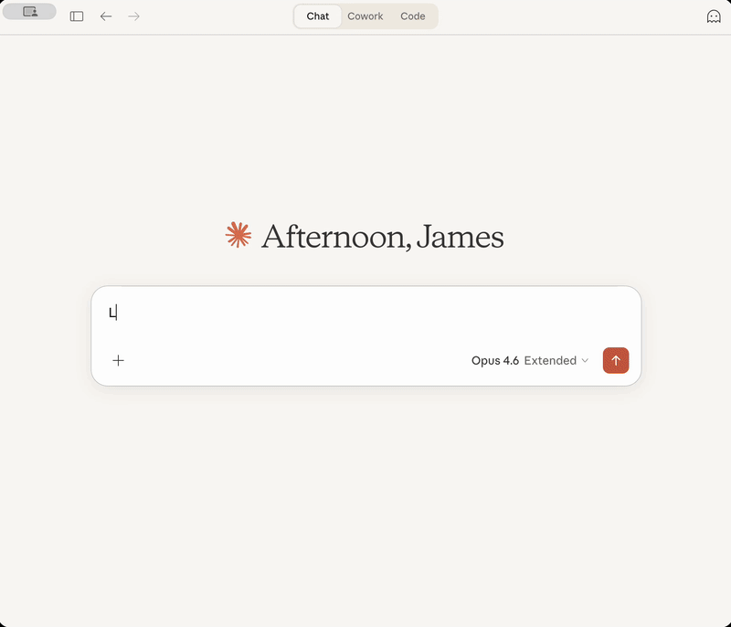

shinymcp builds MCP Apps in R. An MCP App is a tool with a page: a chat client that supports the MCP Apps extension, such as Claude, ChatGPT, or VS Code, shows the page in the conversation, and the person can keep working with it. In shinymcp the tools are R functions and the page is Shiny UI. The model can call the tools on their own, in any MCP client, and the page calls the same tools as the person uses it.

Installation
# install.packages("pak")
pak::pak("JamesHWade/shinymcp")An app from a tool
library(shiny)
library(shinymcp)
faithful_histogram <- ellmer::tool(
function(bins = 20) {
list(
histogram = mcp_result_plot(
function() hist(faithful$waiting, breaks = bins, main = NULL, xlab = "Minutes"),
text = "Histogram of waiting times between eruptions."
),
caption = sprintf("%d eruptions; median wait %d minutes.", nrow(faithful), median(faithful$waiting))
)
},
name = "faithful_histogram",
description = "Show a histogram of waiting times between Old Faithful eruptions.",
arguments = list(
bins = ellmer::type_integer("Number of bins, 5 to 50.", required = FALSE)
),
annotations = ellmer::tool_annotations(read_only_hint = TRUE)
)
app <- mcp_app(
ui = fluidPage(
sliderInput("bins", "Number of bins", min = 5, max = 50, value = 20),
plotOutput("histogram"),
textOutput("caption")
),
tools = list(faithful_histogram),
name = "faithful"
)Names connect the two halves. The tool’s argument bins takes its value from the input with that id, and the list it returns fills the outputs histogram and caption. When the person moves the slider, the page calls the tool again.
The model calls the same tool, and reads what it returns, whether or not its client can show the page:
result <- app$run_tool("faithful_histogram", list(bins = 30))
cat(result$content[[1]]$text)
#> histogram: Histogram of waiting times between eruptions.
#>
#> caption: 272 eruptions; median wait 76 minutes.The plot reaches it as an image, too. Each result is split three ways: text and compact structured data for the model, and what the page draws (HTML, images, widget data), which clients pass to the page and keep from the model. Results can hold text, tables, plots, images, HTML, and htmlwidgets.
preview_app(app) opens the app in your browser the way a chat client shows it, next to what the model receives from each call.
Use it from a chat client
Save the app in a file that ends with serve(app) and register the file with your client. For Claude Desktop, in Settings > Developer > Edit Config:
Other ways to run an app:
-
serve(app, type = "http")serves it over HTTP, for clients that connect to a URL. -
mcp_endpoint(app)makes it a Shiny app that serves MCP at/mcp, to deploy on Posit Connect, Shiny Server, or shinyapps.io. Apps built from tools keep nothing between calls, so they run in as many processes as the server starts.
Showing apps in Shiny
shinymcp also does the chat client’s part, in Shiny. mcp_chat_host() puts apps in a shinychat conversation: the model opens them, and what the person does in them reaches the model with their next message. mcp_host_ui() and mcp_host_server() put an app in a pane of any Shiny app. The apps can be built with shinymcp, or come from any MCP server through mcp_client(), including Shiny apps served with Shiny’s own MCP support.
What the page can do
The page is the UI you give mcp_app(), with shinymcp’s JavaScript in place of Shiny’s. It takes Shiny’s inputs and bslib’s, inputs from packages that register a Shiny input binding (shinyWidgets, for example), and the small mcp_*() components shinymcp provides. It draws every kind of output: text, tables, plots, HTML, and htmlwidgets such as plotly, DT, and leaflet. Conditional panels show and hide, buttons run the tools that take their id, and the page tells the model what the person chose.
Anything from another website, such as map tiles or a script from a CDN, needs a csp declaration: chat clients block the rest.
A Shiny app you already have
There are two ways to put an existing Shiny app in a chat:
- Rewrite the part the model should use as tools. The UI stays as it is; the server function becomes R functions. See Rewriting a Shiny app as tools.
-
Serve the whole app as it is with
as_mcp_app(). Its server function keeps running in R, one session each time the app opens. Shiny is gaining MCP support of its own (rstudio/shiny#4407). Once it is released, it will be the way to do this, and shinymcp will stop serving live apps. See Serving a Shiny app as it is.
shinymcp comes with a skill that takes a coding agent through either one. For Claude Code, copy its folder, system.file("skills", "convert-shiny-app", package = "shinymcp"), into ~/.claude/skills/.
Learn more
- Get started: a first app, from preview to Claude Desktop.
- Building an app from tools: inputs, outputs, results, and tools only the page may call.
- Running an app: chat clients, HTTP, and Posit Connect.
- Hosting MCP Apps in Shiny: in a shinychat conversation or a pane, from any MCP server.
- Rewriting a Shiny app as tools.
- Serving a Shiny app as it is.
- How shinymcp works.
- Troubleshooting.
The examples folder has runnable apps for each of these.